Blocky
Blocky is a Minecraft server site running WordPress. WPScan reports no plugins, but
Gobuster finds a /plugins directory with directory listing on and two downloadable
.jar files. Decompiling the custom BlockyCore.jar gives us a
hardcoded database password. It doesn't work for root on FTP or SSH, but it
does work for the user notch (password reuse), which gets us the user flag
and a shell. From there I enumerated a lot: SUIDs, logs, wp-config.php, MySQL, the WordPress
password hash and phpMyAdmin. Only after all of that did I realize notch had full sudo the
whole time, so sudo bash is root. I then logged into the WordPress backend and restored the
password hash I had changed, like you would on a real engagement.
01 - Enumeration
Full port and service scan first:
$ nmap -sCV -p- -T4 --min-rate 5000 10.129.71.36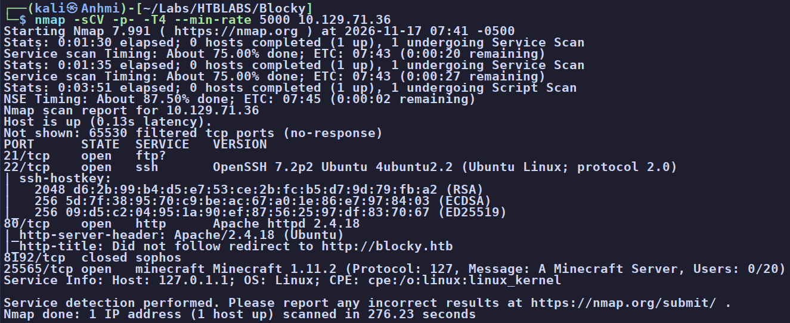
blocky.htb, 25565 (Minecraft 1.11.2), and a closed 8192 (sophos).One of them is a closed sophos port. Upon researching, that name is just nmap's label for
port 8192 from its services list, which maps it to Sophos (an antivirus vendor) remote management. While this
isn't a guarantee, this is good enough for me to get an idea what sophos is.
I first begin with the basics of checking for anonymous login via FTP and SSH, but both don't work:

530 Login incorrect. SSH: Permission denied after three tries. (Recaptured after the box for the report; the original attempts weren't screenshotted.)Checking port 80 (after adding blocky.htb to /etc/hosts) reveals a Minecraft
server homepage running WordPress on Apache:
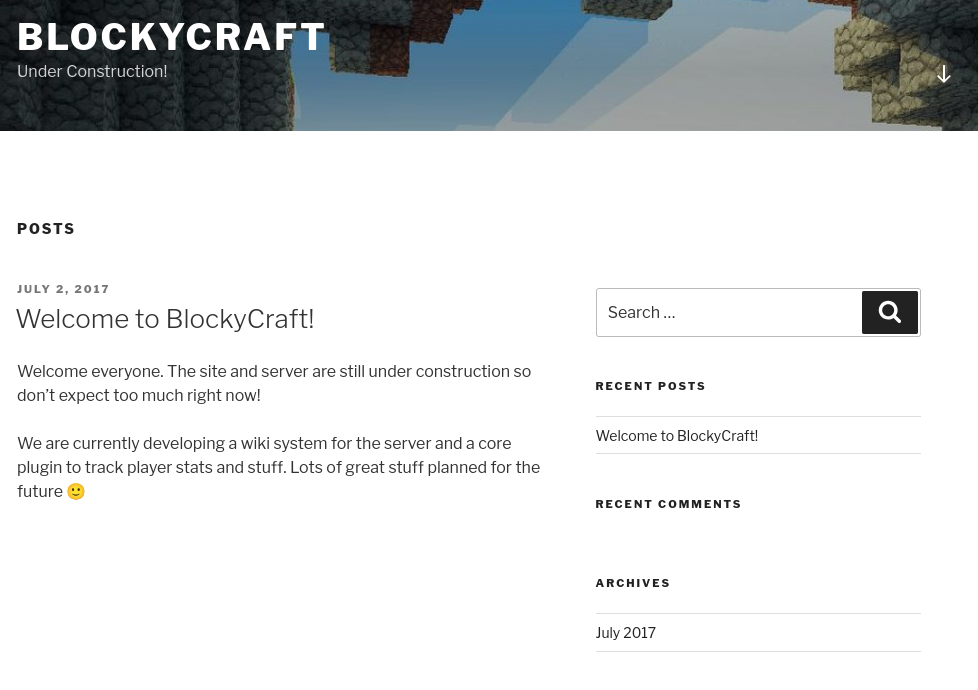
Using WPScan, I find a ton of vulnerabilities, the theme, no plugins, and two users:
$ wpscan --url http://blocky.htb --enumerate --api-token [redacted]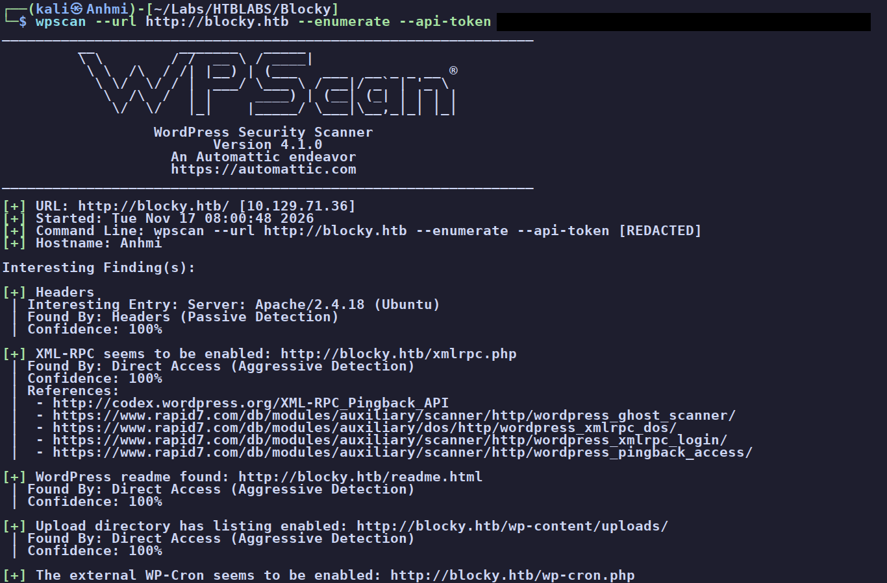
wp-content/uploads/ has directory listing on. (API token blacked out.)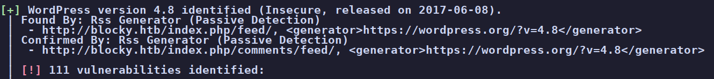

notch / Notch, whose handle mimics the creator of Minecraft.I start a password attack against the two users since I notice xml-rpc is enabled, so this
could be an angle:
$ wpscan --password-attack xmlrpc -t 20 -U notch,Notch -P rockyou.txt --url http://blocky.htb
At the same time, I use Gobuster to enumerate the website:
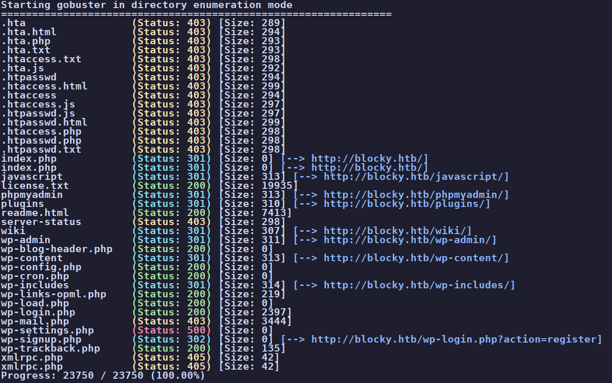
/phpmyadmin and wp-login.php), plus /wiki and /plugins.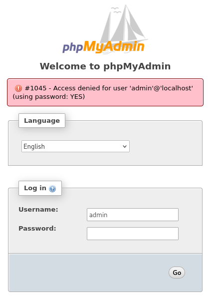
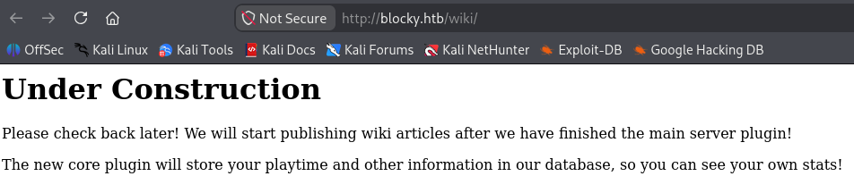
02 - Foothold
Interestingly enough, despite WPScan saying there were no plugins, there IS a /plugins URL,
and there I find two downloadable .jar files:
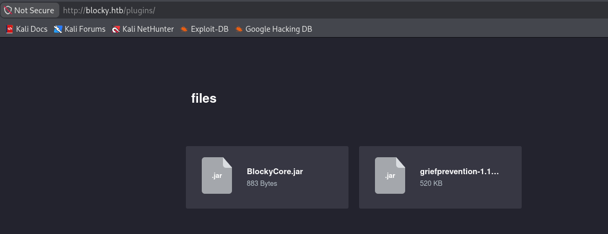
BlockyCore.jar (883 bytes, the custom "core plugin") and griefprevention-1.11.2-3.1.1.298.jar. WPScan only looks at wp-content/plugins, so a Minecraft plugins folder sitting at the web root is invisible to it.A .jar is just a zip, so I download and unzip them. My first set of credentials is in
com/myfirstplugin/BlockyCore.class. While cat shows the strings, javap
shows a more cleaned up way to view them:
$ unzip BlockyCore.jar
$ javap -c -p com/myfirstplugin/BlockyCore.class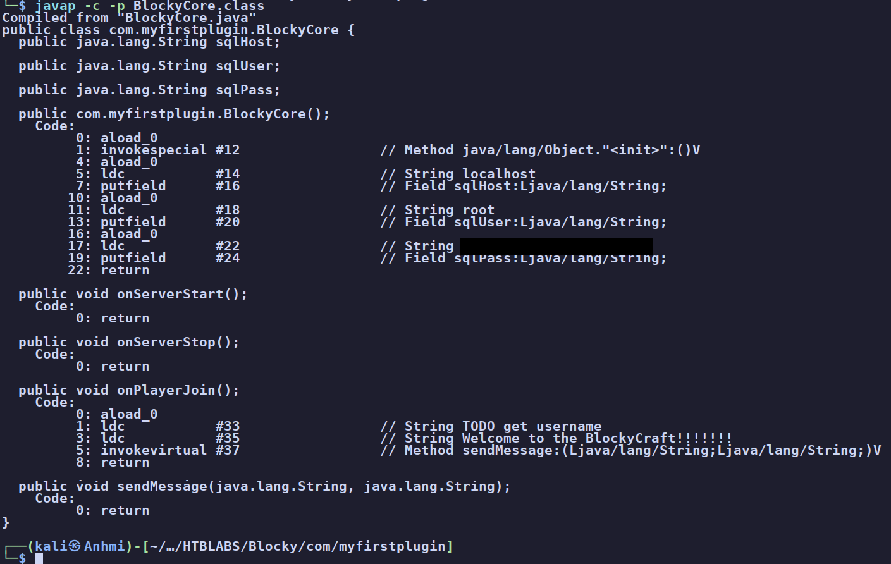
sqlHost = localhost, sqlUser = root and sqlPass = [redacted]. A database root password, hardcoded in a file anyone can download..class file sits in its constant pool in
plain text, and javap (shipped with every JDK) prints it. Put that file in a public directory and
the database root password is public. On its own it's a database credential; what makes it critical here
is that the same password is reused for a real user account (below).
I also enumerated the GriefPrevention .jar a bit, but as the title suggests, it's just a
plugin for the server to stop people from griefing and nothing too juicy is inside:
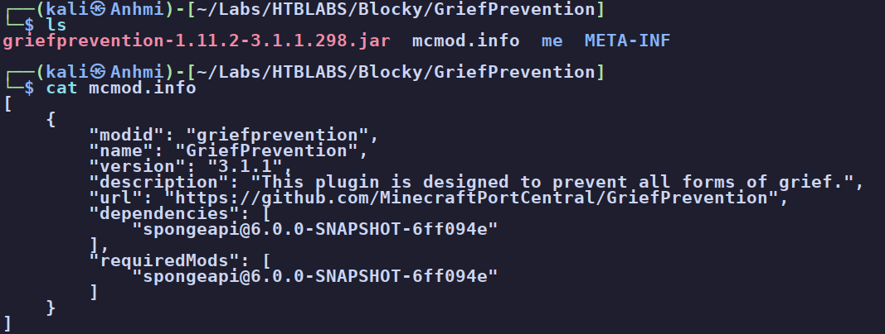
ryanhamshire was related to the box, but after a bit of research it's just the developer of that add-on for Minecraft servers. Check them out, I guess?Using these credentials as root for FTP, SSH and wp-login.php yields no results.
(In retrospect, if I had used them at /phpmyadmin I would have been able to log in and find my
second pair of credentials that way.)
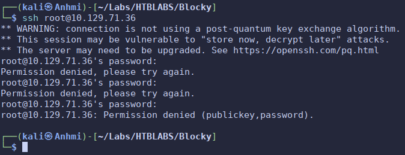
root: Permission denied. (Recaptured for the report.)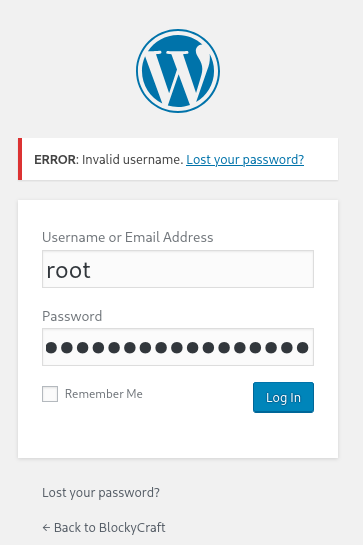
wp-login.php as root: "Invalid username". Only notch / Notch exist. (Recaptured for the report.)So I try the password with the notch username, and DO get access to FTP and SSH:
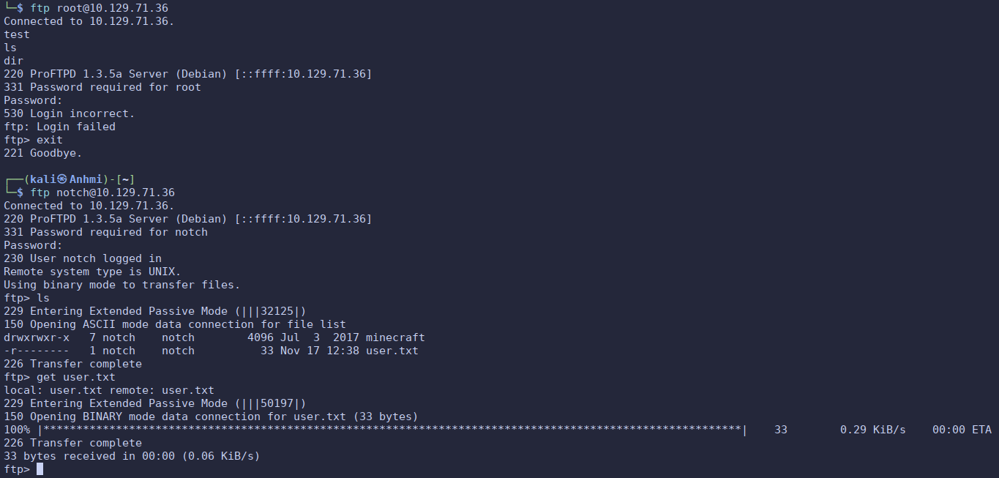
root fails, notch logs in. FTP shows a minecraft directory and user.txt.
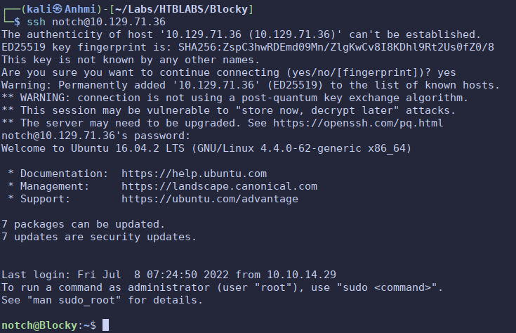
notch on Ubuntu 16.04.2.03 - Priv Esc - sudo
To be honest, this is where I enumerated a lot before the answer clicked. I begin my basic privilege escalation checks with SUIDs and didn't find anything exploitable as far as I could tell:
$ find / -perm -u=s -type f 2>/dev/null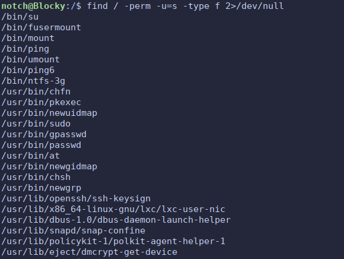
Then the usual whoami, id and sudo -l:
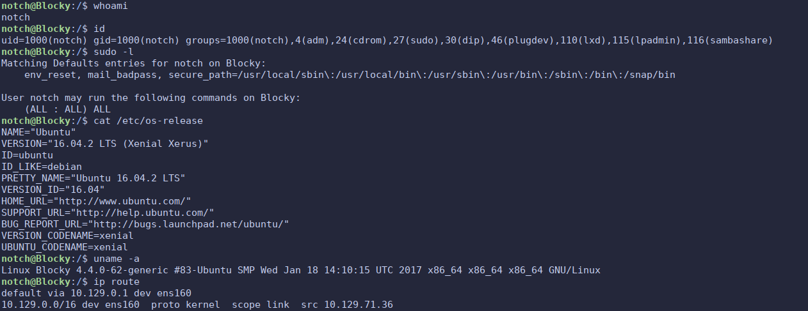
notch is in the sudo group and sudo -l already shows (ALL : ALL) ALL. The answer was right here, and I scrolled straight past it.The adm group was interesting to me, since I could use it to read a bunch of logs:
$ find / -group adm -readable 2>/dev/null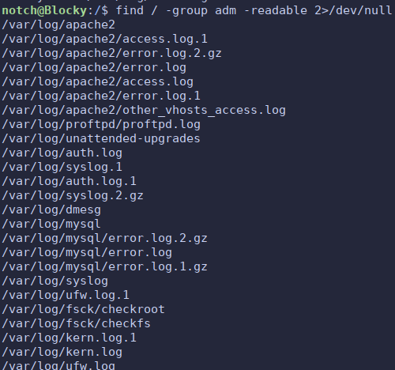
notch.I also checked for container instances since I saw I was a member of lxd, but nothing really
showed up either.
There is a MySQL service running on localhost, and in /var/www/html I find the
wp-config.php file with the MySQL credentials and a bunch of keys and salts. Those salts are what
WordPress uses to sign its login cookies, so with them (plus a user's hash) you could forge a valid auth
cookie:

DB_USER wordpress, DB_PASSWORD [redacted], host localhost.I connect to MySQL via localhost as wordpress. I first looked at the phpmyadmin
database because at this time I didn't know I already had those credentials. I move on to WordPress since I
hadn't really enumerated it, and find the Notch user and a hash:
$ mysql -u wordpress -p -h localhost
mysql> use wordpress;
mysql> select * from wp_users;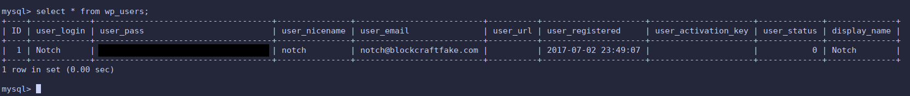
Notch with a phpass hash (redacted). I noted the original value here, which matters later.I did run hashcat on it, but it never really finished, and it was never necessary:
$ hashcat --identify notch.txt
$ hashcat -m 400 -a 0 notch.txt /usr/share/wordlists/rockyou.txt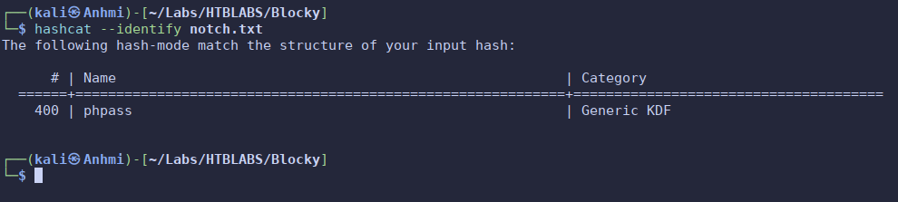
Then I checked SHOW GRANTS; and realized I could write as the logged-in user, so I just
changed the hash myself:
mysql> SHOW GRANTS;
mysql> UPDATE wp_users SET user_pass = MD5('[redacted]') WHERE user_login = 'Notch';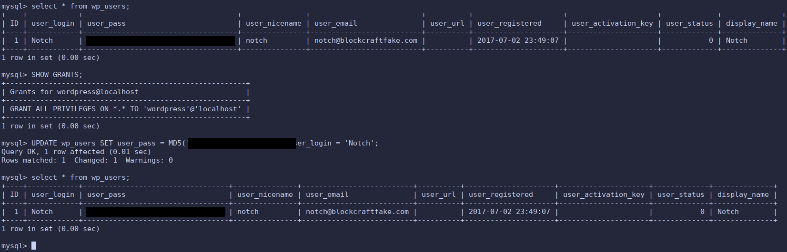
GRANT ALL PRIVILEGES ON *.* for wordpress@localhost, then the update. WordPress still accepts a plain MD5 in user_pass and upgrades it on the next login.And as said earlier, the jar's root password works on phpMyAdmin too:
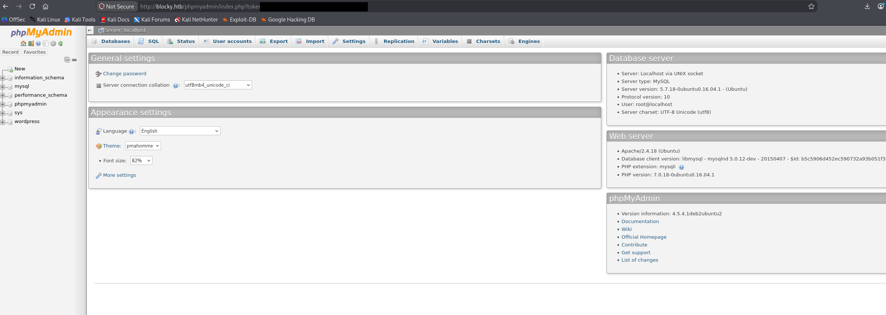
root@localhost, showing every database. (Session token in the URL redacted.)About 45 minutes after that first sudo -l, it finally clicked: wait, notch can run
anything as root, with the password I've had since the foothold.
notch@Blocky:/var/www/html$ sudo bash
whoami: root.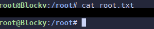
/root I find root.txt [flag omitted]. Box owned..jar. One leaked string goes straight to root with no exploit
involved, so the real finding is the reuse, not the sudo rule.
04 - After root: WordPress backend and cleanup
The WordPress login with the password I set took a while to go through, but it did, and I got into the
backend as Notch:
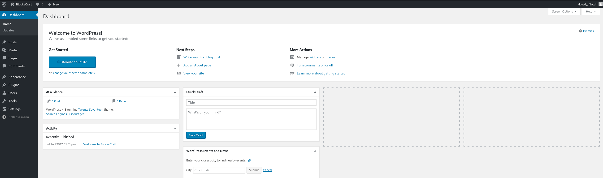
Notch, an admin account taken over straight from the database.In the backend I find two plugins, Akismet Anti-Spam and Hello Dolly. They aren't activated, which is why WPScan didn't find them earlier. Because they aren't activated, I don't think I could exploit them as they are. However, as an admin I could activate them (or edit a plugin or theme file) and take advantage of that.
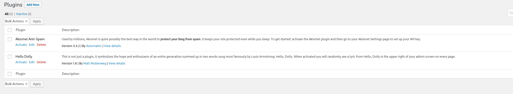
Last, I put Notch's original hash back. Changing a client's password and leaving it changed isn't acceptable on a real engagement, so anything changed during testing gets restored and written down in the report:
mysql> UPDATE wp_users SET user_pass = '[original hash]' WHERE user_login = 'Notch';
mysql> SELECT * FROM wp_users;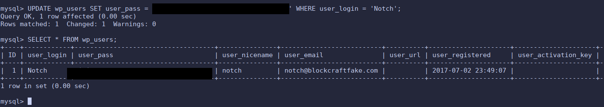
05 - Root cause & remediation
These match the findings in the report, highest severity first.
| Hardcoded database credential in BlockyCore.jar High |
Read DB credentials from a config file or environment at runtime, use a dedicated low-privilege DB account for the plugin instead of root, and rotate the leaked password. |
| Password reuse (DB root = notch) High |
Unique passwords per account and service. Rotate both, use key-based SSH and disable password auth. |
| Unrestricted sudo for notch Medium |
Limit sudo to the commands the user actually needs instead of (ALL : ALL) ALL. |
| Over-privileged WordPress DB account Medium · GRANT ALL ON *.* |
Grant the wordpress account rights on the wordpress database only, and keep wp-config.php readable by the web server user only. |
| phpMyAdmin exposed and accepts DB root Medium |
Restrict phpMyAdmin to an internal/admin network or remove it, and don't let MySQL root log in through it. |
| Outdated WordPress 4.8 Medium · not exploited |
Update WordPress core and the Twenty Seventeen theme. |
| Directory listing enabled Low |
Turn off Options Indexes on /plugins/ and /wp-content/uploads/, and move plugin files out of the web root. |
| WordPress username enumeration Low |
Block author enumeration (?author=, REST users endpoint) and use display names that differ from login names. |
| Cleartext FTP accepts system credentials Low |
Drop plain FTP for SFTP, or at least keep system accounts off it. |
| XML-RPC enabled Info |
Disable or restrict xmlrpc.php if nothing needs it. |
06 - Takeaways
Overall, it was an actual Easy box, which surprised me, as a lot of Easy boxes sometimes involve a lot more work than this one. I can actually remember some Starting Point boxes that required a bit more work for privilege escalation than this one, but it was fun.
The funny part is that sudo -l told me everything in the first minute, and I still went
through SUIDs, logs, MySQL, hashcat and phpMyAdmin before it clicked. Read your own output.
Just another reminder that sometimes we don't need to dig too deep to find what we're looking for.
07 - SysReptor report
This is the same box written up as a client deliverable: findings rated by severity, a step-by-step walkthrough with evidence, the host cleanup, and remediation.
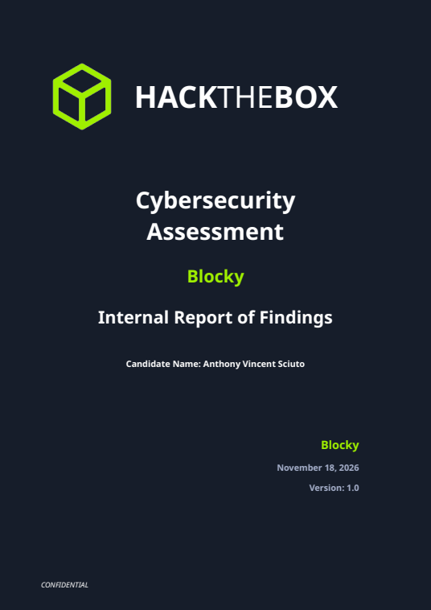
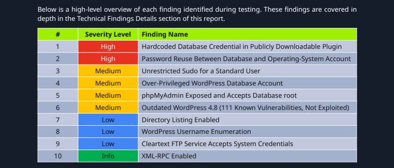